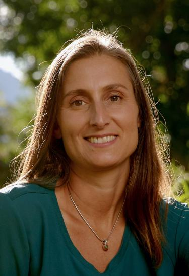

Principal Investigators
Enrico Camporeale (PI)

Dr. Camporeale is the PI of the project. He is a Research Associate at the Cooperative Institute for Research in Environmental Sciences at the University of Colorado Boulder and affiliated with the NOAA Space Weather Prediction Center. He is an expert on Machine Learning techniques applied to Space Weather, and his research interests include numerical methods and uncertainty quantification . He is the chair of the Machine Learning in Heliophysics conference (ML-Helio). enrico.camporeale@noaa.gov
Jacob Bortnik
Prof. Bortnik leads a group at UCLA which is focused on the observation, modeling and prediction of the high energy particle and wave environments in near-Earth space. He uses both physics-based and machine learning models in his work and has organized or co-organized various sessions at AGU and NSF/GEM focused on radiation belts and machine learning, and has worked extensively with PI Camporeale on the ML-Helio conference and various conference sessions. jbortnik@atmos.ucla.edu
Curt de Koning
Dr. de Koning is a Research Associate at the Cooperative Institute for Research in Environmental Sciences at the University of Colorado Boulder and affiliated with the NOAA Space Weather Prediction Center. He has almost 15 years of experience analyzing SECCHI/COR2 and LASCO images. He has researched CME kinematics, energetics, and morphology by implementing an ensemble of reconstruction techniques – geometric localization, polarimetric localization, mass analysis and SWPC-CAT – to analyze coronagraph data. curt.dekoning@noaa.gov
Tom Berger
Dr. Berger is a Research Faculty member at CU Boulder. Prior to becoming the founding and Executive Director of the SWx TREC, he was the Director of NOAA Space Weather Prediction Center. He has extensive experience on research-to-operations transitions of models. He founded and directs the TREC Space Weather Deep Learning Laboratory (DLL) which is one of the first academic laboratories dedicated to the application of machine learning technologies specifically to the space weather prediction problem. thomas.berger@colorado.edu"
Rebecca Morrison
Prof. Morrison is an assistant professor in the Computer Science department at CU Boulder, since 2018. She is an UQ expert whose research focuses on making reliable predictions of physical systems using computational, physics-based and data-driven models. In particular, she has worked on model discrepancy, probabilistic graphical models, and data partitioning. rebeccam@colorado.edu
Claire Monteleoni
Prof. Monteleoni is a machine learning researcher with expertise in designing and analyzing algorithms for learning from non-stationary data streams and spatiotemporal fields, in supervised, unsupervised, and active learning settings, and applying them to practical problems. Her research on machine learning for climate science helped launch the interdisciplinary field of Climate Informatics. cmontel@colorado.edu
Students and Postdocs
Luiz Fernando Guedes dos Santos
Ph.D. in Physics and research assistant at NASA Goddard Space Flight Center. My area of focus is on applying Machine Learning to better understand the internal structure of Coronal Mass Ejections (CMEs). LuizFernando.GuedesdosSantos@colorado.edu
Andong Hu
Ph.D. in Geoscience and research assistant at The RMIT SPACE Research Centre. Two year postdoctoral in Dutch national research institute of mathematics and computer science. My major reseach interest is on implementing Machine Learning on space weather modeling and forecast, e.g., the ionosphereic parameters, magnetic reconnection and solar wind parameters. Andong.Hu@colorado.edu